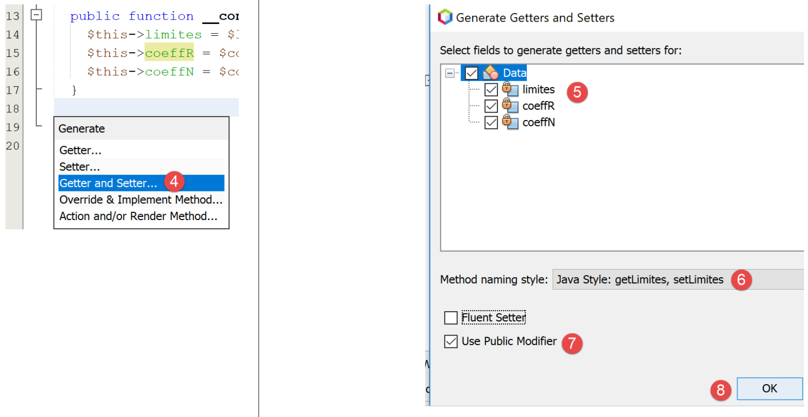

8. Exercício prático – versão 3
Retomamos o exercício já estudado anteriormente (parágrafos 4.3 e 4.4) para o resolver com um código PHP utilizando uma classe.
8.1. A estrutura hierárquica dos scripts

8.2. A exceção [ExceptionImpots]
Na versão 03, quando um construtor ou um método de classe encontrar um erro, lançará uma exceção do tipo [ExceptionImpots], conforme se segue:
Comentários
- linha 4: a classe [ExceptionImpots] encontra-se no espaço de nomes [Application];
- linha 6: a classe [ExceptionImpots] estende a classe predefinida em PHP [RuntimeException];
- linha 8: o construtor espera dois parâmetros:
- $message: é a mensagem de erro associada à exceção;
- $code: é o código de erro associado à exceção. Se não estiver presente, será utilizado o código 0;
8.3. A classe [TaxAdminData]
Na versão 02, os dados da administração fiscal foram reunidos:
- primeiro num ficheiro jSON;
- depois, deste ficheiro jSON para uma tabela associativa;
Na versão 03, os dados da administração fiscal continuam no ficheiro [taxadmindata.json], mas com nomes de atributos diferentes:
{
"limites": [
9964,
27519,
73779,
156244,
0
],
"coeffR": [
0,
0.14,
0.3,
0.41,
0.45
],
"coeffN": [
0,
1394.96,
5798,
13913.69,
20163.45
],
"plafondQfDemiPart": 1551,
"plafondRevenusCelibatairePourReduction": 21037,
"plafondRevenusCouplePourReduction": 42074,
"valeurReducDemiPart": 3797,
"plafondDecoteCelibataire": 1196,
"plafondDecoteCouple": 1970,
"plafondImpotCouplePourDecote": 2627,
"plafondImpotCelibatairePourDecote": 1595,
"abattementDixPourcentMax": 12502,
"abattementDixPourcentMin": 437
}
Na versão 02, este ficheiro servia para inicializar uma tabela associativa. Na versão 03, o ficheiro irá inicializar a seguinte classe [TaxAdminData]:
<?php
namespace Application;
class TaxAdminData {
// faixas de imposto
private $limites;
private $coeffR;
private $coeffN;
// constantes de cálculo do imposto
private $plafondQfDemiPart;
private $plafondRevenusCelibatairePourReduction;
private $plafondRevenusCouplePourReduction;
private $valeurReducDemiPart;
private $plafondDecoteCelibataire;
private $plafondDecoteCouple;
private $plafondImpotCouplePourDecote;
private $plafondImpotCelibatairePourDecote;
private $abattementDixPourcentMax;
private $abattementDixPourcentMin;
// inicialização
public function setFromJsonFile(string $taxAdminDataFilename): TaxAdminData {
// recuperação do conteúdo do ficheiro de dados fiscais
$fileContents = \file_get_contents($taxAdminDataFilename);
$erreur = FALSE;
// erro?
if (!$fileContents) {
// regista-se o erro
$erreur = TRUE;
$message = "Le fichier des données [$taxAdminDataFilename] n'existe pas";
}
if (!$erreur) {
// recuperar o código jSON do ficheiro de configuração numa tabela associativa
$arrayTaxAdminData = \json_decode($fileContents, true);
// erro?
if ($arrayTaxAdminData === FALSE) {
// regista-se o erro
$erreur = TRUE;
$message = "Le fichier de données jSON [$taxAdminDataFilename] n'a pu être exploité correctement";
}
}
// erro?
if ($erreur) {
// lança-se uma exceção
throw new ExceptionImpots($message);
}
// inicialização dos atributos da classe
foreach ($arrayTaxAdminData as $key => $value) {
$this->$key = $value;
}
// verifica-se se todas as chaves foram inicializadas
$arrayOfAttributes = \get_object_vars($this);
foreach ($arrayOfAttributes as $key => $value) {
if (!isset($this->$key)) {
throw new ExceptionImpots("L'attribut [$key] de [TaxAdminData] n'a pas été initialisé");
}
}
// verifica-se se existem apenas valores reais
foreach ($this as $key => $value) {
// $value deve ser um número real >=0 ou uma matriz de números reais >=0
$result = $this->check($value);
// erro?
if ($result->erreur) {
// lança-se uma exceção
throw new ExceptionImpots("La valeur de l'attribut [$key] est invalide");
} else {
// regista-se o valor
$this->$key = $result->value;
}
}
// retorna-se o objeto
return $this;
}
private function check($value): \stdClass {
…
return $result;
}
// toString
public function __toString() {
// cadeia JSON do objeto
return \json_encode(\get_object_vars($this), JSON_UNESCAPED_UNICODE);
}
// getters e setters
public function getLimites() {
return $this->limites;
}
public function getCoeffR() {
return $this->coeffR;
}
…
}
public function setLimites($limites) {
$this->limites = $limites;
return $this;
}
public function setCoeffR($coeffR) {
$this->coeffR = $coeffR;
return $this;
}
…
}
Comentários
- linhas 6-20: os atributos que irão acolher os atributos com o mesmo nome dos ficheiros jSON e [taxadmindata.json]. Este é um ponto importante: os atributos da classe [TaxAdminData] são idênticos aos dos ficheiros jSON e [taxadmindata.json]. Esta particularidade facilita muito a escrita do código;
- a classe [TaxAdminData] não tem um construtor. Em PHP, não é possível ter vários construtores. Definir um impede, portanto, a inicialização do objeto de outra forma. Daqui em diante, as nossas classes não terão um construtor, mas sim vários métodos do tipo [setFromQqChose] que permitirão inicializá-las de diferentes formas. A construção de um objeto do tipo [TaxAdminData] é, então, feita com a expressão:
- linha 23: o método [setFromJsonFile] inicializa os atributos da classe com os de mesmo nome no ficheiro [$jsonFilename];
- linhas 24-42: o ficheiro jSON é utilizado para construir o tabuleiro associativo [$arrayTaxAdminData]. Já nos deparámos com este código no script [main.php] da versão 02;
- linhas 44-47: se ocorrer um erro durante o processamento do ficheiro jSON, é lançada uma exceção. Esta será propagada até ao script principal [main.php];
- linhas 48-51: os atributos da classe são inicializados. Aproveita-se aqui o facto de a tabela associativa [$arrayTaxAdminData] e a classe [TaxAdminData] terem atributos com os mesmos nomes que os valores provenientes do ficheiro jSON;
- linhas 53-57: verifica-se se todos os atributos da classe [TaxAdminData] foram inicializados;
- linha 53: a expressão [get_object_vars($this)] devolve um tabuleiro associativo cujos atributos são os do objeto [$this], ou seja, os atributos da classe [TaxAdminData]. Aqui, é importante compreender que a operação de inicialização das linhas 48-51 pode ter adicionado atributos ao objeto [$this]. Assim, se escrevermos:
então o atributo [x] é adicionado ao objeto [$this], mesmo que esse atributo não tenha sido declarado na classe [TaxAdminData]. O que é certo é que os atributos das linhas 6 a 20 fazem efetivamente parte do objeto [$this], mas podem não ter sido inicializados. Trata-se de um erro fácil de cometer; basta errar num nome de atributo no ficheiro [taxadmindata.json];
- linhas 54-57: são revistos todos os atributos de [$this] e, se algum deles não tiver sido inicializado, é lançada uma exceção;
- um atributo pode ser inicializado com um valor incorreto. No ficheiro PHP, não é possível atribuir um tipo aos atributos. Assim, a operação:
é possível, embora o atributo [$plafondQfDemiPart] devesse ser real;
- linhas 59-71: verifica-se se cada um dos atributos da classe tem um valor numérico real positivo ou nulo. É a função [check] da linha 76 que realiza esta tarefa. O seu parâmetro [$value] é um valor único ou um tabuleiro de valores;
- linha 62: a função [check] devolve um objeto do tipo [\stdClass] com dois atributos:
- [erreur]: para TRUE se tiver ocorrido um erro, para FALSE caso contrário;
- [value]: o valor numérico real correspondente ao parâmetro [$value] passado como parâmetro, linha 62;
- linha 64: verifica-se se a verificação foi bem-sucedida ou não;
- linha 66: se um atributo não for um número real positivo ou nulo, lança-se uma exceção;
- linha 69: caso contrário, regista-se o seu valor numérico;
- linha 73: devolve-se o objeto [$this] como resultado;
A função [check] é a seguinte:
private function check($value): \stdClass {
// $value é uma matriz de elementos ou um único elemento
// cria-se um array
if (!\is_array($value)) {
$tableau = [$value];
} else {
$tableau = $value;
}
// transforma-se o array de elementos de tipo desconhecido num array de números reais
$newTableau = [];
$result = new \stdClass();
// os elementos da matriz devem ser números decimais positivos ou nulos
$modèle = '/^\s*([+]?)\s*(\d+\.\d*|\.\d+|\d+)\s*$/';
for ($i = 0; $i < count($tableau); $i ++) {
if (preg_match($modèle, $tableau[$i])) {
// coloca-se o float em newTableau
$newTableau[] = (float) $tableau[$i];
} else {
// regista-se o erro
$result->erreur = TRUE;
// sai-se
return $result;
}
}
// retorna-se o resultado
$result->erreur = FALSE;
if (!\is_array($value)) {
// um único valor
$result->value = $newTableau[0];
} else {
// uma lista de valores
$result->value = $newTableau;
}
return $result;
}
Comentários
- linha 1: o parâmetro [$value] é uma matriz ou um único elemento. Além disso, não se conhece o seu tipo. O valor provém do ficheiro [taxadmindata.json]. De acordo com os valores registados nesse ficheiro, os valores lidos podem ser inteiros, reais, cadeias de caracteres ou booleanos. Por exemplo:
"plafondQfDemiPart": 1551,
"plafondQfDemiPart": 1551.78,
"plafondQfDemiPart": "1551",
"plafondQfDemiPart": "xx",
No caso 1, o valor é do tipo [entier]; no caso 2, do tipo [réel]; no caso 3, do tipo [string], que pode ser convertido em número; no caso 4, do tipo [string], que não pode ser convertido em número;
- linhas 4-8: cria-se uma tabela a partir do parâmetro [$value] recebido na linha 1;
- linha 10: o tabuleiro que vamos preencher com números reais;
- linha 11: o resultado será um objeto do tipo [\stdClass];
- linha 13: expressão relacional de um número real positivo ou nulo;
- linhas 14-24: verifica-se se todos os elementos da matriz [$tableau] são números reais positivos ou nulos e preenche-se a matriz [$newTableau] com esses elementos convertidos para o tipo [float] (linha 17);
- linhas 18-23: assim que se deteta um elemento que não seja um número real positivo ou nulo, regista-se o erro no resultado e este é devolvido;
- linhas 25-34: caso em que todos os elementos da matriz [$tableau] foram declarados corretos;
- linha 32: o valor devolvido [$result→value] é uma matriz de números reais [float] ou um único número real;
A função [__toString] das linhas 82-85 devolve a cadeia jSON dos atributos e valores do objeto [$this].
Linhas 87-110: os getters e setters da classe;
Nota: por vezes, pode ser um pouco trabalhoso ter de escrever todos os get/set de uma classe, especialmente quando há muitos atributos. O NetBeans pode gerá-los automaticamente, bem como o construtor. Para tal, basta selecionar os atributos [1]:

- em [2], clique com o botão direito do rato no local onde pretende inserir o código e selecione a opção [Insert Code];

- em [4], indique que pretende gerar o construtor;
- em [5], assinale todos os atributos: isto significa que pretende que o construtor tenha um parâmetro para cada um dos atributos;
- em [6], adote o estilo dos construtores Java;
- em [7], indique que pretende explicitamente a palavra-chave [public] antes do construtor;
- em [8], confirme;

- em [9], o NetBeans gerou o construtor. No entanto, não conseguiu definir o tipo dos parâmetros porque não os conhece. Adicione-os você mesmo: [10];
Para gerar os getters e setters, repita os passos 2 a 4 e, no passo 4, selecione [Getter and Setter]:

- em [5], indique que pretende os getters e setters para cada um dos atributos;
- em [6], indique que pretende os getters e setters no estilo utilizado pelo Java: setAttribut, getAttribut;
- em [7], indique que pretende que esses getters e setters sejam públicos;
- em [8], confirme;

- em [9], os getters e setters gerados pelo NetBeans;
Elimine esses getters e setters e repita os passos 2 a 7.
- em [8], assinale a opção [Fluent Setter] que não tínhamos assinalado anteriormente;
O resultado obtido é o seguinte:

Cada setter termina com uma operação [return $this]. Isto permite inicializar os atributos da seguinte forma:
Com efeito, o valor de [$data→setLimites($limites)] (linha 32 do código) é [$this], pelo que, neste caso, é [$data]. Assim, é possível chamar o método [setCoeffR($coeffR)] deste objeto e assim sucessivamente, uma vez que, por sua vez, este método também retorna [$this] (linha 37 do código). Esta forma de escrever os métodos de uma classe, que faz com que os métodos que não deveriam devolver nada devolvam o objeto [$this], denomina-se «escrita fluente». Facilita a utilização destes métodos.
8.4. A interface [InterfaceImpots]
Definimos agora a seguinte interface [InterfaceImpots] [InterfaceImpots.php]:
<?php
// espaço de nomes
namespace Application;
interface InterfaceImpots {
// recuperar os dados das faixas de imposto que permitem o cálculo do imposto
// pode lançar a exceção ExceptionImpots
public function getTaxAdminData(): TaxAdminData;
// a interface sabe calcular um imposto
public function calculerImpot(string $marié, int $enfants, int $salaire): array;
// a interface sabe processar dados em ficheiros de texto
// $usersFilename: ficheiro de dados do utilizador com o estado civil, número de filhos e salário anual
// $resultsFilename: ficheiro de resultados com os seguintes dados: estado civil, número de filhos, salário anual e montante do imposto
// $errorsFilename: ficheiro dos erros detetados
// pode lançar a exceção ExceptionImpots
public function executeBatchImpots(string $usersFileName, string $resultsFileName, string $errorsFileName): void;
}
Comentários
- linha 4: a interface é colocada no espaço de nomes [Application];
- linha 6: a interface que permite o cálculo dos impostos;
- linha 10: o método [getTaxAdminData] permitirá obter os dados da administração fiscal num objeto do tipo [TaxAdminData] que acabámos de apresentar. Como estes dados podem estar num ficheiro, numa base de dados ou mesmo na rede, o método [getTaxAdminData] pode não conseguir obter os dados. Nesse caso, lançará uma exceção do tipo [ExceptionImpots]. Este é o método padrão na programação orientada a objetos para sinalizar um erro ocorrido num método ou num construtor;
- linha 13: o método [calculerImpot] permitirá calcular o imposto de um utilizador;
- linha 20: o método [executeBatchImpots] permite calcular o imposto de vários contribuintes:
- [$usersFileName] é o nome do ficheiro de texto que contém os dados dos contribuintes;
- [$resultsFileName] é o nome do ficheiro de texto que contém o montante do imposto para esses contribuintes;
- [$errorsFileName] é o nome do ficheiro de texto que contém os erros detetados durante o processamento destes ficheiros;
O conteúdo do ficheiro de texto [$usersFileName] poderia ser o seguinte:
oui,2,55555
oui,2,50000
oui,3,50000
non,2,100000
non,3x,100000
oui,3,100000
oui,5,100000x
non,0,100000
oui,2,30000
non,0,200000
oui,3,200000
Note-se que as linhas 5 e 7 contêm elementos errados.
O conteúdo do ficheiro de texto [$resultsFileName] será, então, o seguinte:
e o do ficheiro de texto [$errorsFileName] será o seguinte:
8.5. A classe [Utilitaires]
Além disso, definimos uma classe [Utilitaires] num ficheiro [Utilitaires.php]:
<?php
// espaço de nomes
namespace Application;
// uma classe de funções utilitárias
abstract class Utilitaires {
public static function cutNewLinechar(string $ligne): string {
// elimina-se o marcador de fim de linha de $ligne, caso exista
$longueur = strlen($ligne); // comprimento da linha
while (substr($ligne, $longueur - 1, 1) == "\n" or substr($ligne, $longueur - 1, 1) == "\r") {
$ligne = substr($ligne, 0, $longueur - 1);
$longueur--;
}
// fim - devolve a linha
return($ligne);
}
}
Comentários
- linha 4: a classe [Utilitaires] também é colocada no espaço de nomes [Exemples];
- linha 9: o método [cutNewLinechar] remove o eventual carácter de fim de linha do texto que lhe foi passado como parâmetro. Devolve a nova linha assim formada. Note-se que se trata de um método estático, ou seja, será chamado na forma [Utilitaires::cutNewLineChar];
8.6. A classe abstrata [AbstractBaseImpots]
A interface [InterfaceImpots] será implementada pela seguinte classe abstrata [AbstractBaseImpots]: [AbstractBaseImpots.php]:
<?php
// espaço de nomes
namespace Application;
// definição de uma classe abstrata AbstractBaseImpots
abstract class AbstractBaseImpots implements InterfaceImpots {
// dados da administração fiscal
private $taxAdminData = NULL;
// dados necessários para o cálculo do imposto
abstract function getTaxAdminData(): TaxAdminData;
// cálculo do imposto
// --------------------------------------------------------------------------
public function calculerImpot(string $marié, int $enfants, int $salaire): array {
// $marié: sim, não
// $enfants: número de filhos
// $salaire: salário anual
// $this->taxAdminData: dados da administração fiscal
//
// verifica-se se os dados da administração fiscal estão corretos
if ($this->taxAdminData === NULL) {
$this->taxAdminData = $this->getTaxAdminData();
}
// cálculo do imposto com filhos
$result1 = $this->calculerImpot2($marié, $enfants, $salaire);
$impot1 = $result1["impôt"];
// cálculo do imposto sem os filhos
if ($enfants != 0) {
$result2 = $this->calculerImpot2($marié, 0, $salaire);
$impot2 = $result2["impôt"];
// aplicação do limite máximo do quociente familiar
$plafonDemiPart = $this->taxAdminData->getPlafondQfDemiPart();
if ($enfants < 3) {
// $PLAFOND_QF_DEMI_PART euros para os dois primeiros filhos
$impot2 = $impot2 - $enfants * $plafonDemiPart;
} else {
// $PLAFOND_QF_DEMI_PART euros para os dois primeiros filhos, o dobro para os seguintes
$impot2 = $impot2 - 2 * $plafonDemiPart - ($enfants - 2) * 2 * $plafonDemiPart;
}
} else {
$impot2 = $impot1;
$result2 = $result1;
}
// aplica-se o imposto mais elevado
if ($impot1 > $impot2) {
$impot = $impot1;
$taux = $result1["taux"];
$surcôte = $result1["surcôte"];
} else {
$surcôte = $impot2 - $impot1 + $result2["surcôte"];
$impot = $impot2;
$taux = $result2["taux"];
}
// cálculo de uma eventual dedução
$décôte = $this->getDecôte($marié, $salaire, $impot);
$impot -= $décôte;
// cálculo de uma eventual redução de impostos
$réduction = $this->getRéduction($marié, $salaire, $enfants, $impot);
$impot -= $réduction;
// resultado
return ["impôt" => floor($impot), "surcôte" => $surcôte, "décôte" => $décôte, "réduction" => $réduction, "taux" => $taux];
}
// --------------------------------------------------------------------------
private function calculerImpot2(string $marié, int $enfants, float $salaire): array {
…
// resultado
return ["impôt" => $impôt, "surcôte" => $surcôte, "taux" => $coeffR[$i]];
}
// revenuImposable=salárioAnual-abatimento
// a dedução tem um valor mínimo e um valor máximo
private function getRevenuImposable(float $salaire): float {
…
// resultado
return floor($revenuImposable);
}
// calcula uma eventual redução
private function getDecôte(string $marié, float $salaire, float $impots): float {
…
// resultado
return ceil($décôte);
}
// calcula uma eventual redução
private function getRéduction(string $marié, float $salaire, int $enfants, float $impots): float {
…
// resultado
return ceil($réduction);
}
public function executeBatchImpots(string $usersFileName, string $resultsFileName, string $errorsFileName): void {
…
}
}
Comentários
- linha 4: a classe [AbstractBaseImpots] estará no espaço de nomes [Application], tal como os outros elementos da aplicação que está a ser desenvolvida;
- linha 7: a classe [AbstractBaseImpots] implementa a interface [InterfaceImpots];
- linha 9: os dados da administração fiscal serão colocados no atributo [$taxAdminData];
- linha 12: implementação do método [getTaxAdminData] da interface. Ainda não sabemos como definir este método: vimos um exemplo em que os dados da administração fiscal foram obtidos a partir de um ficheiro jSON no parágrafo anterior. Veremos outro caso em que os dados terão de ser obtidos a partir de uma base de dados. Caberá às classes derivadas definir o conteúdo do método [getTaxAdminData]. Os dois casos anteriores darão origem a duas classes derivadas. O método [getTaxAdminData] é, portanto, declarado abstrato, o que torna automaticamente a própria classe abstrata (linha 7);
- linhas 15-64: a função de cálculo do imposto já abordada nos parágrafos link e link;
- a versão 02 colocava os dados da administração fiscal numa tabela associativa [$taxAdminData]. A versão 03 coloca-os no atributo [$this→taxAdminData]. A primeira diferença entre estas duas soluções é uma diferença na visibilidade dos dados fiscais:
- na versão 02, a tabela associativa [$taxAdminData] não tinha visibilidade global. Por isso, era passada como parâmetro a todas as funções de cálculo do imposto;
- na versão 03, o atributo [$this→taxAdminData] tem visibilidade global para todos os métodos da classe. Por conseguinte, não é passado como parâmetro a todas as funções de cálculo do imposto;
- uma segunda diferença decorre do facto de a versão 03 substituir funções por métodos de classe. Cada chamada de método é agora efetuada com uma expressão [$this→getMéthode(…)] (linhas 27, 31, 57, 60);
- uma terceira diferença é que, quando o método [calculerImpot] inicia o seu trabalho, não sabe se o atributo [private $taxAdminData] de que necessita foi inicializado. Com efeito, o construtor da classe não o inicializa. Cabe, portanto, ao método [calculerImpot] fazê-lo com a ajuda do método [getTaxAdminData] da linha 12. É isso que acontece nas linhas 23-25;
- para além destas diferenças, os métodos de cálculo do imposto permanecem os mesmos das versões anteriores;
A função [executeBatchImpots] é a seguinte:
public function executeBatchImpots(string $usersFileName, string $resultsFileName, string $errorsFileName): void {
// podem ocorrer bastantes erros sempre que se trabalha com ficheiros
try {
// erros ao abrir o ficheiro
$errors = fopen($errorsFileName, "w");
if (!$errors) {
throw new ExceptionImpots("Impossible de créer le fichier des erreurs [$errorsFileName]", 10);
}
// abertura do ficheiro de resultados
$results = fopen($resultsFileName, "w");
if (!$results) {
throw new ExceptionImpots("Impossible de créer le fichier des résultats [$resultsFileName]", 11);
}
// leitura dos dados do utilizador
// cada linha tem o formato: estado civil, número de filhos, salário anual
$data = fopen($usersFileName, "r");
if (!$data) {
throw new ExceptionImpots("Impossible d'ouvrir en lecture les déclarations des contribuables [$usersFileName]", 12);
}
// processa-se a linha atual do ficheiro de dados do utilizador
// que tem o formato: estado civil, número de filhos, salário anual
$num = 1; // n.º da linha atual
$nbErreurs = 0; // número de erros encontrados
while ($ligne = fgets($data, 100)) {
// depuração
// print "linha n.º " . ($i + 1) . " : " . $ligne;
// remove-se o eventual caractere de fim de linha
$ligne = Utilitaires::cutNewLineChar($ligne);
// recuperam-se os 3 campos «casado:filhos:salário» que formam $ligne
list($marié, $enfants, $salaire) = explode(",", $ligne);
// verifica-se se estão corretos
// o estado civil deve ser «sim» ou «não»
$marié = trim(strtolower($marié));
$erreur = ($marié !== "oui" and $marié !== "non");
if (!$erreur) {
// o número de filhos deve ser um número inteiro
$enfants = trim($enfants);
if (!preg_match("/^\s*\d+\s*$/", $enfants)) {
$erreur = TRUE;
} else {
$enfants = (int) $enfants;
}
}
if (!$erreur) {
// o salário é um número inteiro, sem cêntimos de euro
$salaire = trim($salaire);
if (!preg_match("/^\s*\d+\s*$/", $salaire)) {
$erreur = TRUE;
} else {
$salaire = (int) $salaire;
}
}
// erro?
if ($erreur) {
fputs($errors, "la ligne [$num] du fichier [$usersFileName] est erronée\n");
$nbErreurs++;
} else {
// calcula-se o imposto
$result = $this->calculerImpot($marié, (int) $enfants, (int) $salaire);
// regista-se o resultado no ficheiro de resultados
$result = ["marié" => $marié, "enfants" => $enfants, "salaire" => $salaire] + $result;
fputs($results, \json_encode($result, JSON_UNESCAPED_UNICODE) . "\n");
}
// linha seguinte
$num++;
}
// erros?
if ($nbErreurs > 0) {
throw new ExceptionImpots("Il y a eu des erreurs", 15);
}
} catch (ExceptionImpots $ex) {
// relança-se a exceção
throw $ex;
} finally {
// fecha-se todos os ficheiros
fclose($data);
fclose($results);
fclose($errors);
}
}
Comentários ao código
- linha 1: a função recebe três parâmetros:
- [$usersFileName]: o nome do ficheiro de texto que contém os dados dos contribuintes. Cada linha de texto contém os dados de um contribuinte no seguinte formato: estado civil (sim/não), número de filhos, salário anual:
- (continuação)
- [$resultsFileName]: o nome do ficheiro de texto que conterá os resultados. Cada linha de texto terá o seguinte formato:
- (continuação)
- [$errorsFileName]: o nome do ficheiro de texto dos erros:
la ligne [5] du fichier [taxpayersdata.txt] est erronée
la ligne [7] du fichier [taxpayersdata.txt] est erronée
- linha 3: uma vez que algumas operações podem lançar uma exceção, um bloco try / catch / finally envolve todo o código do método;
- linhas 3-19: os três ficheiros são abertos. É lançada uma exceção assim que a abertura de um ficheiro falhar;
- linha 24: as linhas do ficheiro [$data] são lidas uma a uma, em blocos de, no máximo, 100 caracteres (todas as linhas têm menos de 100 caracteres);
- linha 28: utiliza-se o método estático [Utilitaires::cutNewLineChar] para remover a eventual marca de fim de linha;
- linha 30: recuperam-se os três elementos da linha lida;
- linhas 33-52: verifica-se a validade dos três elementos. Aqui, não se lança uma exceção caso ocorra um erro, mas regista-se a mensagem do erro no ficheiro de texto [$errors] (linha 55);
- linha 59: se a linha lida for válida, é efetuado o cálculo do imposto. Obtém-se um resultado sob a forma de tabela associativa ["impôt" => floor($impot), "surcôte" => $surcôte, "décôte" => $décôte, "réduction" => $réduction, "taux" => $taux];
- linha 61: ao resultado obtido, são adicionadas as chaves [marié, enfants, salaire];
- linha 61: o resultado é gravado no ficheiro de texto [$results] sob a forma da cadeia jSON do resultado obtido;
- linhas 68-70: no final do processamento do ficheiro [$data], verifica-se o número de linhas com erros encontradas. Se houver pelo menos uma, é lançada uma exceção;
- linhas 71-74: intercepta-se a exceção que o código possa ter lançado e relança-se-a imediatamente (linha 73). O objetivo deste artifício é poder incluir uma cláusula [finally] nas linhas 74-79: independentemente da forma como a execução do código do método termine, os três ficheiros que possam ter sido abertos por esse código são fechados. Fechar um ficheiro que não tenha sido aberto não provoca qualquer erro;
8.7. A classe [ImpotsWithTaxAdminDataInJsonFile]
A classe abstrata [AbstractBaseImpots] não implementa o método [getTaxAdminData] da interface [InterfaceImpots]. Por isso, temos de a definir numa classe derivada. Fazemo-lo na seguinte classe derivada [ImpotsWithTaxAdminDataInJsonFile]:
<?php
// espaço de nomes
namespace Application;
// definição de uma classe ImpotsWithDataInArrays
class ImpotsWithTaxAdminDataInJsonFile extends AbstractBaseImpots {
// um atributo do tipo Data
private $taxAdminData;
// o construtor
public function __construct(string $jsonFileName) {
// inicializa-se $this->taxAdminData a partir do ficheiro jSON
$this->taxAdminData = (new TaxAdminData())->setFromJsonFile($jsonFileName);
}
// retorna os dados que permitem o cálculo do imposto
public function getTaxAdminData(): TaxAdminData {
// retorna o atributo [$this->taxAdminData]
return $this->taxAdminData;
}
}
Comentários
- linha 7: a classe [ImpotsWithTaxAdminDataInJsonFile] estende a classe abstrata [AbstractBaseImpots]. Terá de definir o método [getTaxAdminData] que a sua classe pai não definiu;
- linha 9: o atributo [$taxAdminData] conterá os dados da administração fiscal;
- linhas 12-15: o construtor recebe como único parâmetro o nome do ficheiro jSON que contém os dados fiscais;
- linha 14: é criado e, em seguida, inicializado um objeto do tipo [TaxAdminData]. Esta operação pode lançar uma exceção do tipo [ExceptionImpots]. Esta exceção será propagada até ao script principal [main.php];
- linhas 18-20: atribui-se um corpo ao método [getTaxAdminData] que a classe pai não tinha definido. Aqui, basta fazer com que o atributo [$this->taxAdminData] seja inicializado pelo construtor;
8.8. O script [main.php]
Estas classes e interface são utilizadas pelo seguinte script [main.php]:
<?php
// respeito rigoroso dos tipos declarados dos parâmetros das funções
declare(strict_types = 1);
// espaço de nomes
namespace Application;
// inclusão de interfaces e classes
require_once __DIR__ . '/InterfaceImpots.php';
require_once __DIR__ . "/TaxAdminData.php";
require_once __DIR__ . '/ExceptionImpots.php';
require_once __DIR__ . '/Utilitaires.php';
require_once __DIR__ . '/AbstractBaseImpots.php';
require_once __DIR__ . "/ImpotsWithTaxAdminDataInJsonFile.php";
// teste -----------------------------------------------------
// definição de constantes
const TAXPAYERSDATA_FILENAME = "taxpayersdata.txt";
const RESULTS_FILENAME = "resultats.txt";
const ERRORS_FILENAME = "errors.txt";
const TAXADMINDATA_FILENAME = "taxadmindata.json";
try {
// cria-se um objeto ImpotsWithTaxAdminDataInJsonFile
$impots = new ImpotsWithTaxAdminDataInJsonFile(TAXADMINDATA_FILENAME);
// executa-se o lote dos impostos
$impots->executeBatchImpots(TAXPAYERSDATA_FILENAME, RESULTS_FILENAME, ERRORS_FILENAME);
} catch (ExceptionImpots $ex) {
// exibe-se o erro
print $ex->getMessage() . "\n";
}
// fim
print "Terminé\n";
exit();
Comentários
- linha 4: impõe-se o cumprimento rigoroso dos tipos dos parâmetros das funções;
- linha 7: o script [main.php] também é colocado no espaço de nomes [Application];
- linhas 10-15: indica-se ao interpretador PHP onde se encontram as classes e interfaces utilizadas pelo script. Note-se que, neste caso, não utilizámos a instrução use para declarar o nome completo das classes utilizadas pelo script. Na verdade, isso é desnecessário, uma vez que o script e as classes se encontram no mesmo espaço de nomes [Application];
- linhas 18-22: os nomes dos ficheiros de texto utilizados no script;
- linhas 24-29: é criado um objeto [ImpotsWithTaxAdminDataInJsonFile] e qualquer exceção é tratada;
- linha 28: executa-se o método [executeBatchImpots], que irá calcular os impostos para todos os contribuintes do ficheiro [TAXPAYERSDATA_FILENAME]. Os resultados serão colocados no ficheiro [RESULTS_FILENAME] e os eventuais erros no ficheiro [ERRORS_FILENAME];
- linhas 29-32: em caso de erro irrecuperável, é exibida a mensagem de erro;
Resultados
Com o ficheiro de contribuintes [taxpayersdata.txt] a seguir:
oui,2,55555
oui,2,50000
oui,3,50000
non,2,100000
non,3x,100000
oui,3,100000
oui,5,100000x
non,0,100000
oui,2,30000
non,0,200000
oui,3,200000
obtém-se o seguinte ficheiro de erros [errors.txt]:
la ligne [5] du fichier [taxpayersdata.txt] est erronée
la ligne [7] du fichier [taxpayersdata.txt] est erronée
e o ficheiro de resultados [resultats.txt] seguinte: